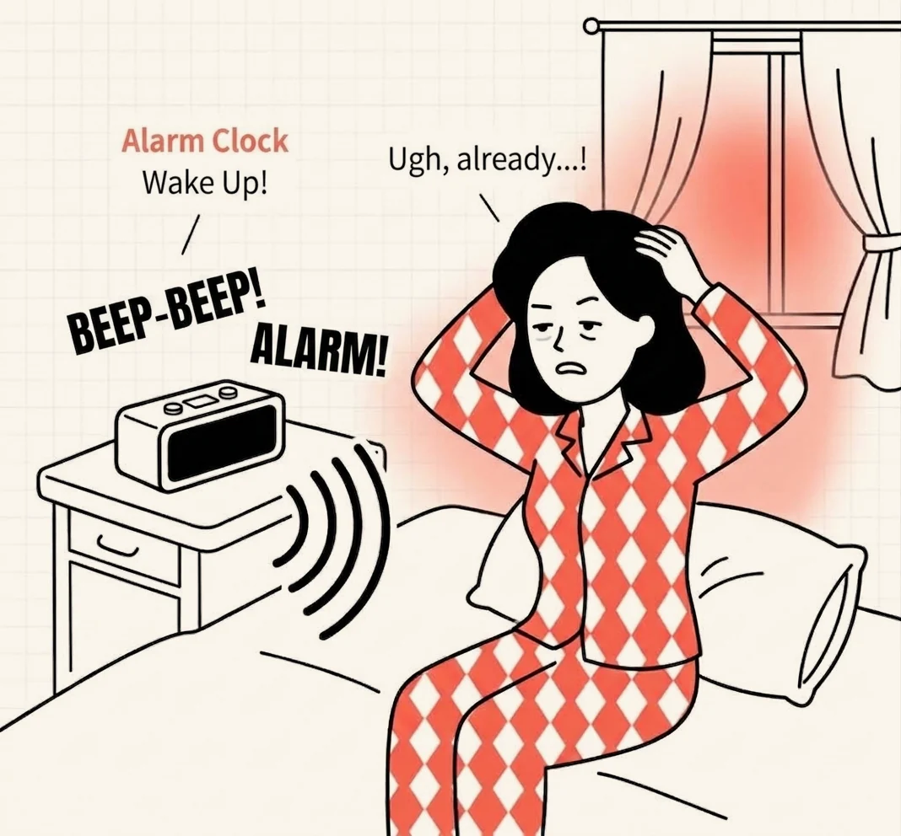
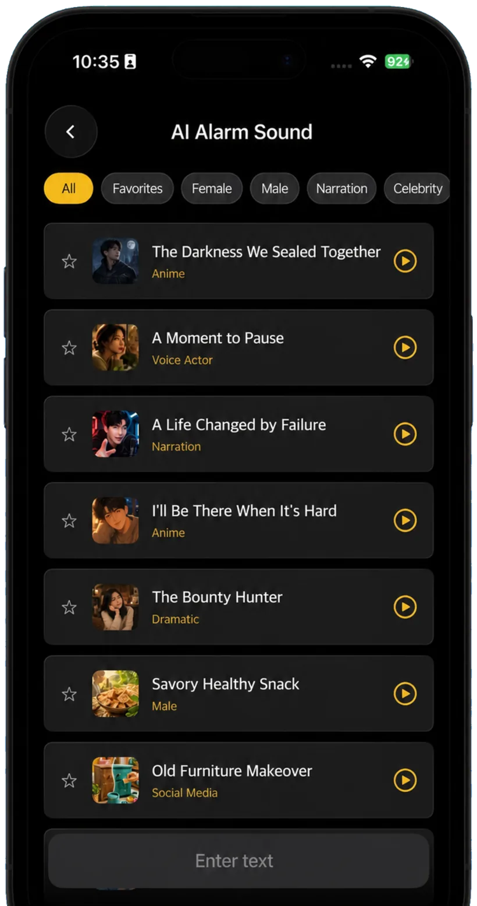

Zaco Labs
Your own AI alarm voice
Your body learns to sleep through the same ringtone. Waky is an alarm app where a range of AI voices — voice actors, narration, animation — read out the line you wrote.
iOS · Android · Free to download

What makes Waky different
Instead of making the alarm louder, we made it harder to ignore.
-
Pick the voice you want
Female, male, voice actor, narration, animation, dramatic. Browse by category, listen, and star the ones you like.
-
Write your own line
Type something like “Big presentation today — get up,” and an AI voice reads it back. An alarm written for your morning.
-
Listen before you set it
Hit play in the list and hear it first. No unpleasant surprises the next morning.
-
Harder to tune out
A fixed ringtone gets filtered out by your brain within days. A different voice saying a different line does not.

Three steps to set it up
From first launch to a working alarm takes about a minute.
-

Set the alarm time
Choose when to get up, exactly like the alarm you already use.
-

Choose a voice and a line
Pick a voice from the AI alarm list, or type your own line to create a new one.
-

Wake up to that voice
In the morning, instead of a ringtone, your chosen voice reads your chosen words.
Frequently asked questions
Anything else, just send us an email.
What can I do if I've gotten used to my alarm and sleep through it?
Why do I sleep through several alarms in a row?
Is there an alarm app that wakes you with an AI voice?
How is an AI alarm different from a normal one?
Can I make an alarm that says something I wrote?
Besides the alarm, what else helps with waking up?
Is Waky free?
Which devices does it support?
What kinds of AI voices are there?
Can I create my own alarm sound?
Can I preview an alarm sound?
Can I save the ones I like?
How do I get in touch?
Wake up to a different voice tomorrow
Waky is free on iOS and Android.